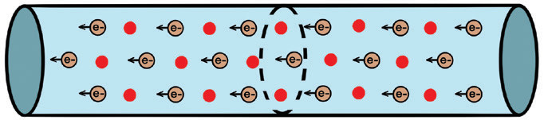
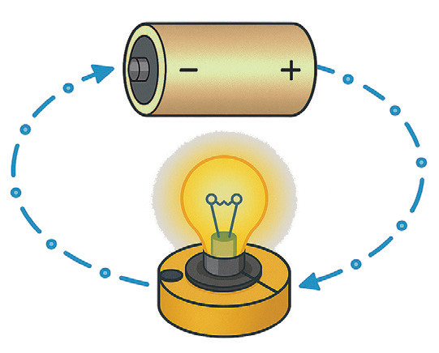

Chapter Two
Current electricity
Introduction
Current electricity is a fundamental aspect of engineering science that is crucial for designing, analysing, and enhancing electric circuits, electronic devices, and power systems in various technological fields. In this chapter, you will learn the concepts of current electricity, voltage, Ohm’s law, electrical components, electrical energy and power. The competencies developed will enable you to design and make simple electric circuits for various applications. It will also enable you to utilise electrical appliances efficiently in various contexts.
Concept of current electricity
A conductor, such as an electric wire (Figure 2.1(a)), contains charges (negative or positive); when these charges are compelled to move, they constitute an electric current. To initiate this movement, we must establish a potential difference across the conductor ends.
Various methods have been utilised to create a potential difference; one employs a battery as shown in Figure 2.1 (b), while another involves connecting a charged capacitor. To ensure a steady flow of current, we must use a battery, as the capacitor discharges immediately once the current flows.

